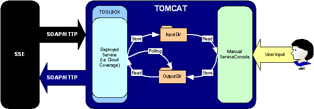

Plugins |
|
|
|
||
Manual Service
The "Manual Service Console" WEB application allows a manual service (i.e. a service requiring human intervention) to be easily integrated within the SSE environment. The "Manual Service Console" is a TOOLBOX plug-in, in that it processes the requests the TOOLBOX (or better, a service installed on the TOOLBOX) receives from the SSE Portal and creates, using the input of a human operator, the responses the TOOLBOX sends back to the SSE (see also the section "... on the TOOLBOX side"). The "Manual Service Console" is released configured to support a sample service accepting orders for reports on the Cloud Coverage, however it can be customized to support different types of services. The following picture shows how the Manual Service Console collocates within the SSE environment:  The Manual Service Console is a Web Application
installed on the same Tomcat server where the TOOLBOX runs.
The pending requests are
ranked in a table whose rows contain: the request file name,
the request file time stamp and the button ("Reply >>")
to reply the request. A request can be downloaded right-clicking
on the hyperlink related to the request file and choose "Save
link target as ...".
To
reply a request, click on the button "Reply >>"
in the corresponding row: the page containing the request
parameters and the response form will be displayed. The
"Manual Service Console" is released configured
to support a sample Cloud Coverage service with following
request parameters:
The response form contains fields to supply: To reply a request, the fields of the form must be filled with values valid according to the XML schema installed to the TOOLBOX (see the section "... on the TOOLBOX side"). To delete a request simply click on the button "Delete Request". The view of the requests and the corresponding response form can be customized, even to introduce new parameters, by an XSL file (see the Manual Service Console documentation provided with the installation package). In the following a description on how the TOOLBOX and the "Manual Service Console" work together and how the TOOLBOX must be configured to interact with the "Manual Service Console" is provided. When the TOOLBOX (i.e. a service installed on the TOOLBOX) receives a SOAP message (request) coming from the SSE Portal, it stores the SOAP message payload in the "Manual Service Console" input directory (<TOMCAT_HOME>/webapps/ServiceConsole/inputDir/) and starts polling for the response file in the "Manual Service Console" output directory (<TOMCAT_HOME>/webapps/ServiceConsole/outputDir/). When the "Manual Service Console" operator clicks on the hyperlink "View Requests", the "Manual Service Console" looks for the request files in the input directory and display them as described above. The operator can reply to a request by filling the corresponding response form. Once the operator has submitted the response, the "Manual Service Console" stores it in its output directory. At this point the TOOLBOX loads the response file, envelopes it in a SOAP message compliant with the SSE ICD and sends it back to the SSE. The interaction between the TOOLBOX and the "Manual Service Console" does not change if the operator deletes the request, what changes is the SOAP response the TOOLBOX sends back to the SSE Portal. In order to make the TOOLBOX interact with the "Manual Service Console", a service (performing the operations just described) must be installed on it. As already stated, the "Manual Service Console" is released configured to support a service accepting orders for reports on the cloud coverage on a certain area of interest. Such service has the following request parameters:
and the following response parameters:
A service (let us call it
CloudCoverage) to be installed on the TOOLBOX supporting the
request and response parameters above is released with the "Manual
Service Console".
The CloudCoverage service installation files include:
The CloudCoverage service installation files must be provided to the TOOLBOX (after a brief customization) following the service creation procedure described in the Creating a Service section. The CloudCoverage service has to be deployed in the TOOLBOX as asynchronous service. The three scripts of the CloudCoverage service perform this:
Thus in order to deploy the CloudCoverage service on the TOOLBOX which can be used with the "Manual Service Console" the Order scripts provided have to be customized in the following way:
At this point the CloudCoverage installation files can be
used to deploy the service on the TOOLBOX following the procedure
described in the Creating
a Service section.
|
|||